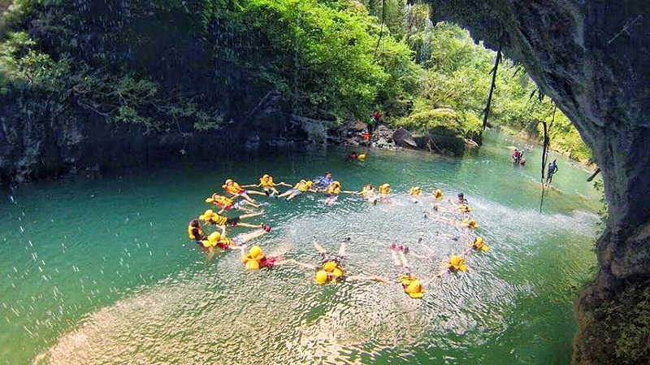
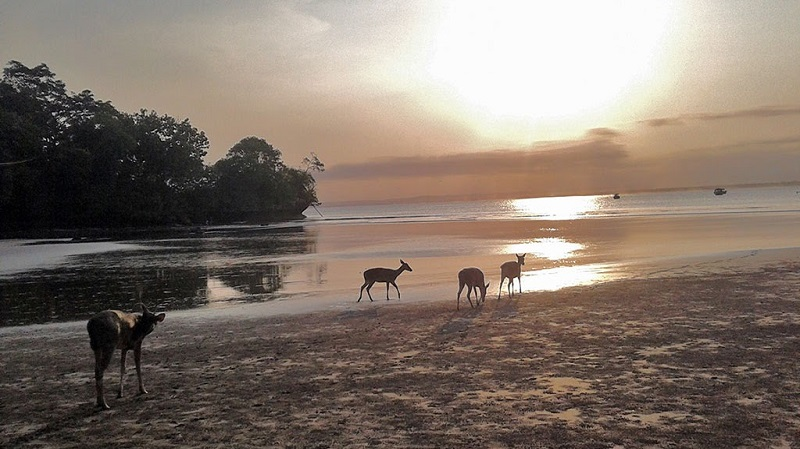
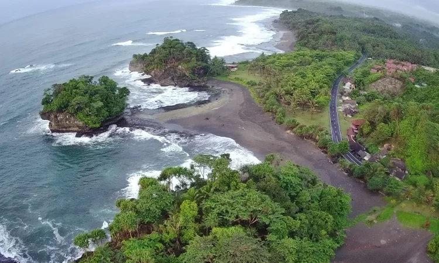
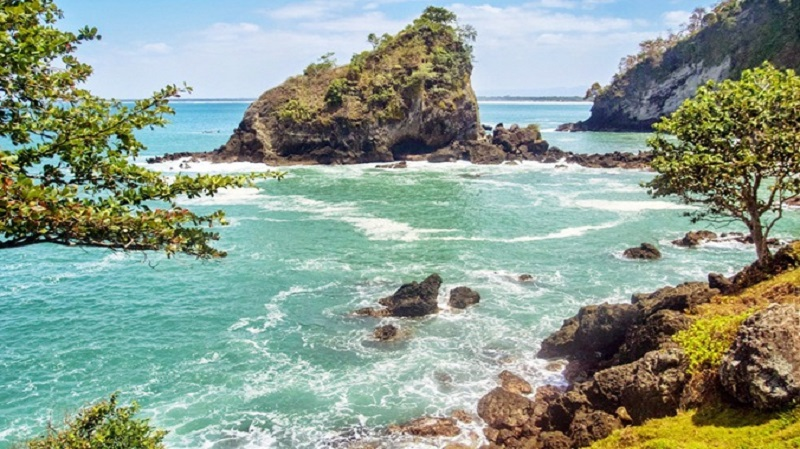

Pantai Pasir Putih Pangandaran
Pantai Pasir Putih Pangandaran menawarkan pesona keindahan alam, yang berpadu dengan hamparan pasir putih. Selain itu, masih satu kawasan dengan Taman Wisata Dan Cagar Alam, serta wisata Pantai Pangandaran, sebagai gerbang awalnya.
Lokasi : masih berada di kawasan Taman Wisata dan Cagar Alam Pangandaran. Pantai Pasir Putih Pangandaran beralamat di Desa Pananjung, Kecamatan Pangandaran, Kabutapen Pangandaran, Provinsi Jawa Barat.

Green Canyon Pangandaran
Cukang Taneuh atau Green Canyon adalah salah satu objek wisata di Jawa Barat yang terletak di Desa Kertayasa Kecamatan Cijulang, Kabupaten Pangandaran. Objek wisata ini berjarak ± 26 km dari Pantai Pangandaran.
Lokasi : Jalan Raya Cijulang Dusun Karangpaci RT 02 RW 10 Kertayasa Kec. Cijulang Kab. Pangandaran

Cagar Alam Pangandaran
Anda dapat bereksplorasi di wilayah Taman Wisata alam dengan berjalan kaki. Sangat banyak di daerah Taman Wisata Alam dan Cagar Alam ini yang dapat di kunjungi. Batu Layar, Cirengganis, Pantai Pasir Putih ada di kawasan cagar alam laut. Lalu, air terjun yang berada di kawasan cagar alam bagian selatan, dapat ditempuh dengan jalan kaki selama 2 jam melalui jalan setapak. Padang pengembalaan Cikamal yang merupakan areal padang rumput dan semak seluas 20 hektar sebagai habitat banteng dan rusa.
Lokasi : Desa Pangandaran Kec. Pangandaran Kab. Pangandaran Provisi Jawa Barat

Pantai Madasari Pangandaran
Pantai di ujung barat Pangandaran ini merupakan salah satu pantai eksotis tersembunyi yang kini mulai ramai dikunjungi. Tempat yang dikelola oleh masyarakat sekitar tersebut menjadi salah satu spot terbaik untuk berburu sunset. Nama pantai ini sendiri diambil dari salah satu legenda masyarakat Bugis yang namanya diubah menjadi Madasari. Ombak di pantai ini cukup tinggi, sehingga pengunjung sebaiknya tidak terlalu jauh ke tengah laut.
Lokasi : Jl. Pantai Wisata, Masawah, Kec. Cimerak, Kab. Pangandaran. Pantai Madasari Pangandaran termasuk salah satu tempat wisata yang wajib dikunjungi saat bertandang di Pangandaran, Jawa Barat.

Pantai Karang Nini Pangandaran
Pantai Karang Nini merupakan pantai yang tenang dan asri sangat cocok untuk melepas penat atau mengisi liburan di akhir pekan. Pantai Karang Nini memiliki daya tarik alam yang berbeda pada pantai pada umumnya. pengunjung dapat melihat kawasan pantai lebih lapang hingga titik terjauh. Jika pengunjung melihat pemadangan ke arah timur, ada penjara yang sangat ditakuti para penjahat yakni Pulau Nusa Kambangan. Dari tempat yang sama, pengunjung dapat melihat keindahan Teluk Pananjung, yang mana Pantai Pangandaran terlihat jelas keindahannya serta pecahan ombak berwarna putih.
Lokasi : Desa Emplak, Kecamatan Kalipucang, Kabupaten Pangandaran, Provinsi Jawa Barat.

Curug Luhur Pangandaran
Curug Luhur Pangandaran semakin melengkapi khazanah wisata di Pangandaran, sehingga banyak alternatif wisata ketika berlibur di Kabupaten Pangandaran. Curug Luhur Pangandaran memiliki tinggi sekitar 70 meter, dengan tipe air terjun berundak. Terlihat sangat megah, alam di sekitarnya masih sangat asri, karena memang belum terjamah oleh tangan-tangan manusia.
Lokasi: Desa Cimanggu, Kecamatan Langkaplancar, Kabupaten Pangandaran, Jawa Barat.

Citumang Pangandaran
Obyek wisata alam Citumang merupakan obyek wisata yang memiliki daya tarik khusus, yaitu sungai Citumang yang mengalir membelah hutan jati dengan airnya yang bening kebiruan. Tepian sungai yang terdiri dari ornamen batu-batu padas dengan relung dalam dihiasi relief alam dan aliran sungai yang menembus ke dalam goa. Keheningan alam akan Anda jumpai disini. Musik alami berupa gemercik air sungai, bisikan angin sepoi yang menyelinap di antara pepohonan dan suara satwahutan yang tak pernah sepi.
Lokasi : Desa Bojong, Kecamatan Parigi, Kabupaten Pangandaran.
Wonder Hill Jojogan Pangandaran
Wisata di Pangandaran bukan hanya terkenal akan berwisata di pantainya saja, melainkan terkenal juga akan kegiatan body rafting. Banyak sekali tempat wisata di Pangandaran yang memfasilitasi kegiatan tersebut, salah satunya ialah di Wonder Hill Jojogan.
Lokasi : Dusun Gunung Tiga, Desa Cintaratu, Kecamatan Parigi, Kabupaten Pangandaran, Jawa Barat.
Batu Hiu
Pantai Batu Hiu adalah destinasi wisata alam yang menawarkan keindahan laut lepas Samudera Hindia dari bukit karang. Pantai Batu Hiu kerap disebut sebagai Tanah Lot nya Jawa Barat karena memiliki batu karang yang menjorok ke tengah laut seperti halnya Tanah Lot di Pulau Bali. Selain itu, terdapat sebuah batu karang di tengah laut yang bentuknya menyerupai ikan hiu. Pantai Batu Hiu menjadi tujuan favorit wisatawan yang ingin beristirahat sembari menghabiskan bekal makan siang karena memiliki hamparan rumput yang hijau.
Lokasi : Desa Ciliang, Kecamatan Parigi, Kabupaten Ciamis Jawa Barat.

Pantai Karapyak
Karapyak adalah salah satu destinasi wisata pantai dengan sebutan “Paradise Beach” Destinasi ini memiliki daya tarik wisata berupa hamparan pasir putih nan elok yang dipadu dengan bebatuan karang di sepanjang garis pantainya. Pemandangan alamnya yang eksotis dan suasananya yang sejuk dibalut dengan semilirnya angin pantai yang tenang, membuat para wisatawan betah jika berlama-lama berada Pantai Karapyak. Lokasi ini merupakan spot yang pas untuk melihat terbit dan tenggelamnya matahari.
Lokasi : Desa Bagolo, Kecamatan Kalipucang, Kabupaten Pangandaran dan berjarak sekitar 7,9 KM.

Goa Panggung
gua ini adalah Embah Jaga Lautan atau disebut pula Kyai Pancing Benar. Beliau merupakan anak angkat dari Dewi Loro Kidul dan ibunya menugaskan untuk menjaga lautan di daerah Jawa Barat pada khususnya dan menjaga pantai Indonesia pada umumnya oleh karena itu beliau disebut Embah Jaga Lautan
Sebenarnya Embah Jaga Lautan ini berasal dari Mesir yang ditugaskan untuk menyebarkan agama Islam.
Lokasi : Dusun Selakambang, Desa Selasari, Kecamatan Parigi, Kabupaten Pangandaran. Gua Panggung juga merupakan gua bentukan alam yang berada di perbukitan karst.

Goa Sinjang
Gua Sinjang Lawang ini dibuka sekitar tahun 2014, tujuan dibukanya Gua Sinjang Lawang ini yaitu untuk meningkatkan perekonomian masyarakat juga untuk melestarikan alam. Oleh karena itu, tempat wisata ini benar-benar dijaga keasriannya.Buat kamu yang orang Sunda, pasti udah gak asing lagi dengan kata ‘Sinjang’ dan ‘Lawang’, yang artinya kalo dalam bahasa Sunda, Sinjang ini berarti kain, dan Lawang artinya pintu. Kalau dilihat secara langsung, dinding di mulut gua ini memang memiliki motif mirip kain batik yang tercipta karena proses alam. Ukiran batu di gua ini membentuk motif batik khas Sunda dalam kain Sinjang, atau kalau dalam bahasa Indonesia biasa disebut sarung.
Lokasi : Dusun Parinengan, Desa Jadimulya, Kecamatan Langkap Lancar, Kabupaten Pangandaran.

Curug Taringgul
Obyek Wisata Curug Taringgul di Cibanten Pangadaran Jawa Barat memiliki pesona keindahan yang sangat menarik untuk dikunjungi. Sangat di sayangkan jika anda berada di kota pangadaran tidak mengunjungi wisata curug yang mempunyai keindahan yang tiada duanya tersebut.Obyek Wisata Curug Taringgul di Cibanten Pangadaran Jawa Barat sangat cocok untuk mengisi kegiatan liburan anda, apalagi saat liburan panjang seperti libur nasional, ataupun hari ibur lainnya.
Lokasi : Cibanten, Cijulang, Cibanten, Pangandaran, Jawa Barat 46394, Indonesia.

Batu Karas
Pantai Batukaras menawarkan daya tarik pantai yang indah, ombak yang bagus untuk berenang, berselancar dan permainan air seperti banana boat; spot yang tepat untuk bersantai menikmati sunset dan sunrise.Bagi anda yang suka berpetualang, Batukaras menawarkan beberapa tempat yang cocok untuk berkemah dan hiking diantaranya adalah Karangnunggal yaitu pantai terpencil di area Batukaras yang memiliki bukit karang menjulang tinggi di bibir pantai yang sangat indah. Selain itu, wisatawan juga dapat melihat view Pantai Pangandaran, Pantai Batu Hiu, Pelabuhan Bojong Salawe dan Pantai Madasari dari atas bukit Pantai Batukaras.
Lokasi : Desa Batu Karas, Kecamatan Cijulang, Kabupaten Pangandaran, Provinsi Jawa Barat

Kampus Turis
Kampung Turis di Pangandaran merupakan area wisata kuliner yang berada tepat di pesisir Pantai Pangandaran, Jawa Barat.Wisata satu ini menyuguhkan keindahan suasana pantai di malam hari yang akan membuat liburan Anda menjadi lebih sempurna.Di tempat ini terdapat beberapa resto dan cafe yang siap melayani dan menghidangkan makanan pesanan Anda, mulai dari makanan tradisional khas Nusantara hingga makanan internasional.Soal harga, dijamin masih sangat terjangkau untuk kita yang minim budget liburan.
Lokasi : Desa Wonoharjo, Kecamatan Pangandaran, Kabupaten Pangandaran. Jaraknya dari pantai Pangandaran hanya sejauh 2 Km

Pantai Lembah Putri
Pantai Lembah Putri merupakan tempat wisata yang menarik untuk anda kunjungi ketika ingin menghabiskan waktu libur bersama keluarga di Pangandaran. Berlibur di pantai memang menyenangkan, sehingga banyak orang yang menghabiskan waktu liburnya dengan menikmati pesona wisata pantai.
Lokasi : Putrapinggan, Kecamatan Kalipucang, Kab. Ciamis, Jawa Barat.
Taman Pangadaran Sunset
Taman Pangandaran Sunset namanya. Ruang terbuka publik yang pertama di bangun pemerintah daerah. Bahkan sebelum dilakukan proses penataan dan relokasi pedagang wisata dari pinggir pantai.
Lokasi : Persis di ujung jalan utama gerbang masuk Pangandaran. Di kawasan taman yang ditata indah, wisatawan bisa menikmati sunset dengan suasana yang cukup ramai.
Cukang Taneuh
Cukang Taneuh menyajikan panorama dua tebing hasil pahatan alam dengan rerimbunan pohon yang tumbuh diatasnya mengapit kokoh sungai Cijulang. Sinar matahari yang jatuh ke permukaan sungai dengan air berkelir hijau lumut terbelah bebatuan raksasa yang menyembul, membentuk garis-garis cahaya indah.
Lokasi : Desa Kertayasa Kecamatan Cijulang, Kabupaten Pangandaran. Objek wisata ini berjarak ± 26 km dari Pantai Pangandaran.